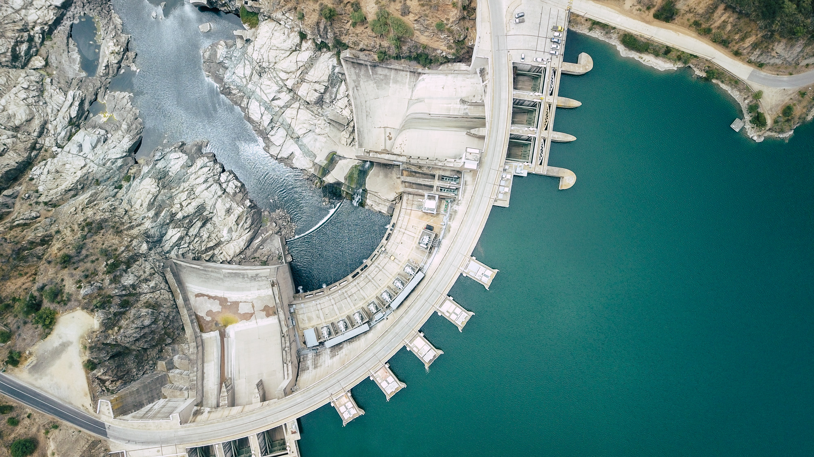
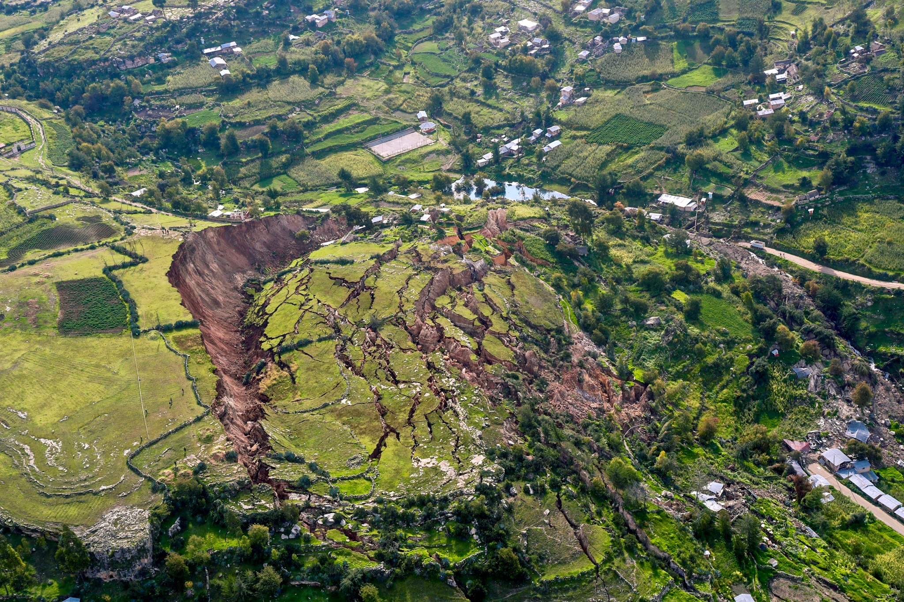
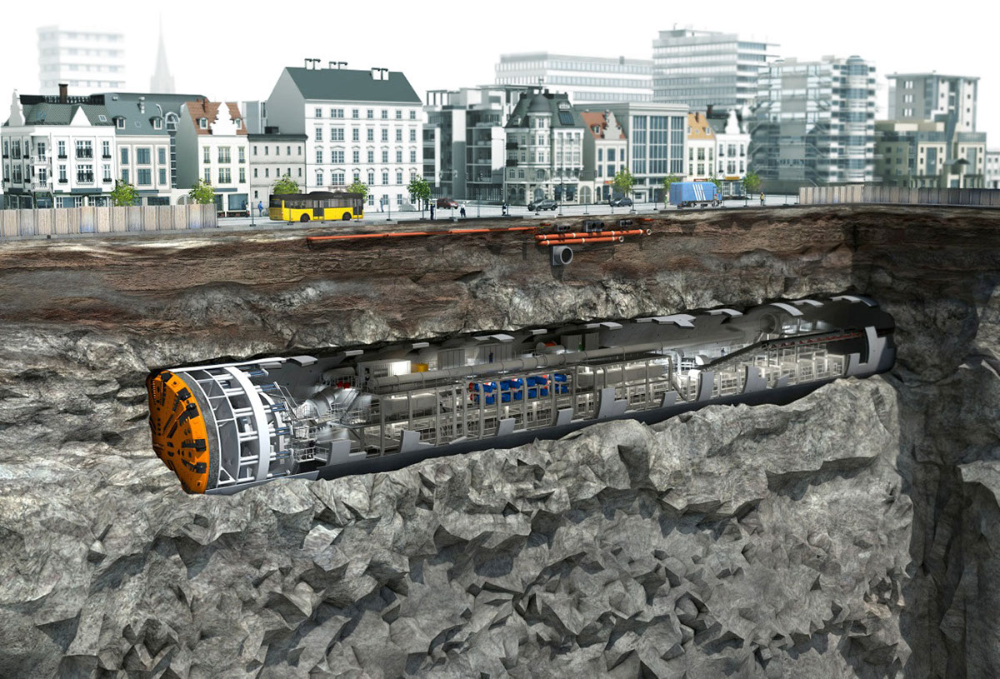
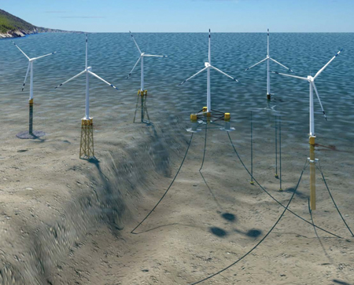
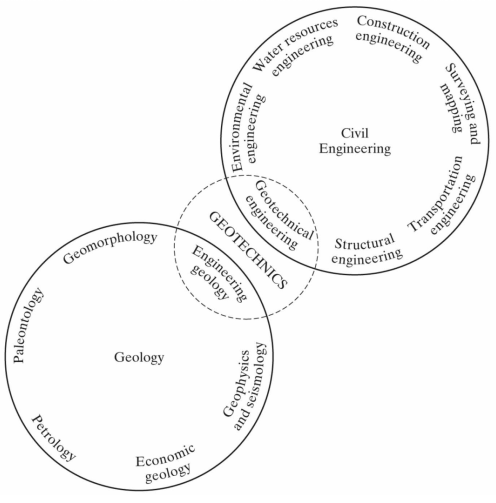

CIE 100: Introduction to Geotechnical Engineering
Presenter: Luis Zambrano-Cruzatty, Ph.D.
Fall, 2021Civil engineering
Design , construction, operation, and maintenance of our naturally occurring or built environment.
It is a great profession. There is the fascination of watching a figment of the imagination emerge through the aid of science to a plan on paper. Then it moves to realization in stone or metal or energy. Then it brings jobs and homes to men. Then it elevates the standards of living and adds to the comforts of life. That is the engineer's high privilege.


Geology matters!. You will find out.
Virtually every structure is supported by soil or rock. Those that aren't either fly, float, or fall over. Richard handy (1955).
What Geotechnical Engineering is?
Application of physical, chemical, and mathematical models to study soil and/or rock behavior (i.e. mechanics) for the design, constructions, and operation of civil infrastructure systems (i.e., soil/rock structure interaction, water-soil interaction, air-soil interaction)

History and development of Geotechnical Engineering
Mathew 7:24-27“Everyone then who hears these words of mine and does them will be like a wise man who built his house on the rock. And the rain fell, and the floods came, and the winds blew and beat on that house, but it did not fall, because it had been founded on the rock. And everyone who hears these words of mine and does not do them will be like a foolish man who built his house on the sand. And the rain fell, and the floods came, and the winds blew and beat against that house, and it fell, and great was the fall of it.”
History and development of Geotechnical Engineering

History and development of Geotechnical Engineering
Support for these structures mainly:
- Stemmed from experience
- Intuition
- Rules of thumb
- Recorded previous success
History and development of Geotechnical Engineering
- With industrialization we needed reliable methods to support larger, more complex structures.


- Exploratory borings began.
- Foundation size was recognized to be proportional to loading.
- However, no comprehensive science or theory for soil/rock behavior.


What makes Geotechnical engineering unique?
- Is a service and practice oriented discipline.
- Geomaterials are not prescribed. We must investigate them.
- Geomaterials are multiphase and highly complex materials.
- They deform easily which can lead to catastrophyc disasters.


Site investigation


A diverse subdiscipline
- Soil testing
- Soil behavior
- Soil mechanics
- Rock mechanics
- Foundations and retaining systems
- Dam and levees
- Slope stability
- Coastal and marine geotechnics
- Geomechanics
- Geonvironmental engineering
- Soil remediation
- ...
Foundation engineering


Leaning Millennium Tower of San Fransisco

Current situation:
- 58-story skyscraper (650 ft tall)
- Poured-in-place concrete structure. Largest west of the Mississippi
- Supported on \($leq$\) 950